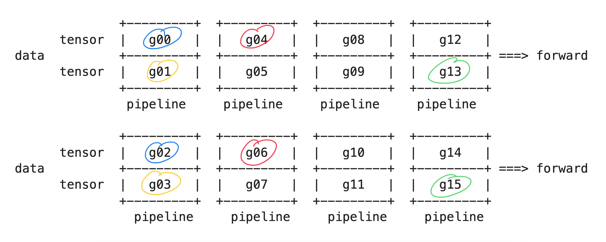
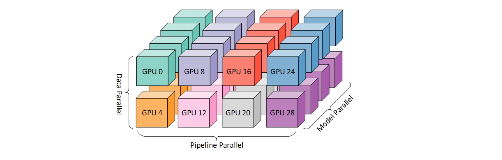
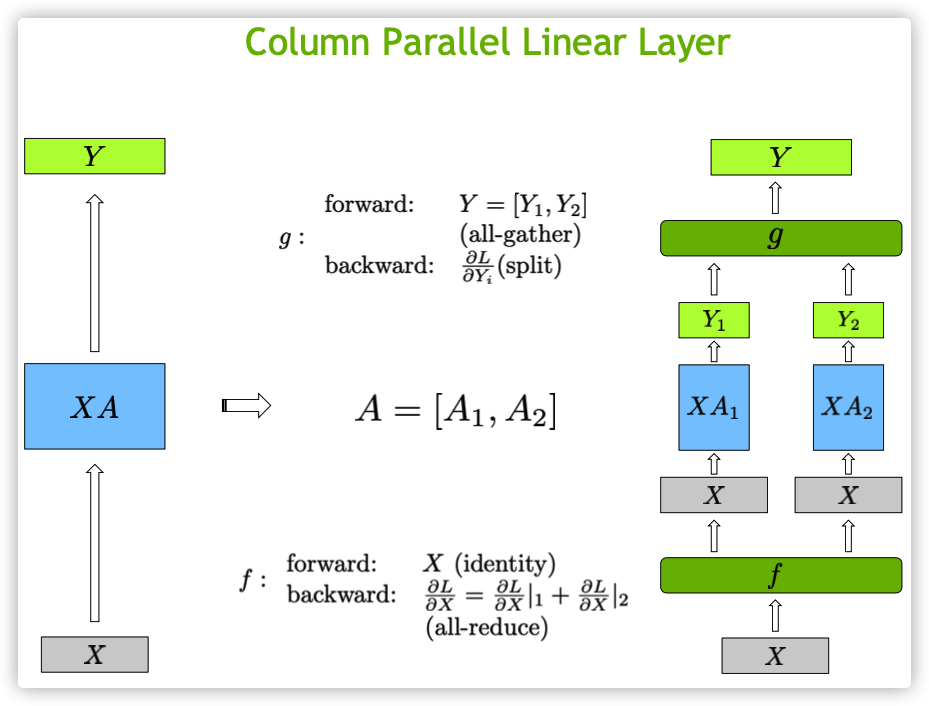

world_size = 16 # the total number of GPUs
tensor_model_parallel_size = 2
pipeline_model_parallel_size = 4FSDL: Breaking down parallelism in Megatron-LM
1. GPUs allocation
Megatron-LM combines three kinds of parallelism techniques to make the most of the available computational resources.
- Model Parallelism: In this case, the model is divided layer by layer, spread out over multiple devices. This is also known as vertical splitting.
- Tensor Parallelism: This involves splitting the weights within each layer of the model, distributing them across several devices. This is also called horizontal splitting.
- Data Parallelism: Here, several copies of the same model are made. During the backward pass, all the gradients across these copies are averaged out and this average is used to update all the model replicas’s weights.
So at high-level, Megatron-LM first breaks down a model into different stages, with each stage having several layers - this is known as pipeline parallelism. Within each layer of a stage, the computation is divided into smaller sections, with each section assigned to a different GPU - this is tensor parallelism.
In order to carry out computations across multiple devices, each device initiates multiple processes, each of which handles a specific GPU. This way, each process can directly send computational tasks to its designated GPU. To make this work, Megatron-LM organizes GPUs into three groups:
- Data Parallel Group: Each GPU in this group handles the same part of the model, but works on different mini-batches. During backpropagation, each GPU calculates the gradient for its part of the model. These gradients are then averaged to get the overall gradient for updating the model’s parameters.
- Tensor Parallel Groups: In this group, each GPU handles different parts of the same layer (or multiple layers). Each GPU computes the output for its designated part and these partial outputs are combined to get the complete output of the layer.
- Pipeline Parallel Groups: The GPUs in this group handle different stages of the forward and backward passes.
Data Parallel Groups
Megatron-LM uses three variables to set up pipeline parallelism:
tensor_model_parallel_size: The number of GPUs across which a layer will be split in tensor parallelismpipeline_model_parallel_size: It represents the number of stages in the pipelinedata_parallel_size: It represents the number of model replicas in data parallelism.
And then each process keeps a variable for each parallelism group to keep track of which group it belongs to.
In pipeline parallelism, a model is split into pipeline_model_parallel_size stages.
Because Megatron-LM incorporates both tensor parallelism and pipeline parallelism, so each stage has tensor_model_parallel_size GPUs to parallelize the tensor operations in that stage. So, the total number of GPUs required to parallelize a model would be:
num_gpus_for_each_model = tensor_model_parallel_size * pipeline_model_parallel_sizenum_gpus_for_each_model8And then to calculate the number of model replicates in data parallelism, we divide the total number of GPUs (world_size) by the number of GPUs used for each model (num_gpus_for_each_model):
data_parallel_size = world_size // num_gpus_for_each_modeldata_parallel_size2Already, so we will have two model replicas. Next, let’s setup all data parallel groups.
num_pipeline_model_parallel_groups = world_size // pipeline_model_parallel_sizenum_pipeline_model_parallel_groups4data_parallel_groups = []for i in range(pipeline_model_parallel_size):
start_rank = i*num_pipeline_model_parallel_groups
end_rank = (i+1)*num_pipeline_model_parallel_groups
print(f"stage={i}, start_rank={start_rank}, end_rank={end_rank}") # ignore
for j in range(tensor_model_parallel_size):
ranks = list(range(start_rank+j, end_rank, tensor_model_parallel_size))
data_parallel_groups.append(ranks)
print(f"partition {j}, ranks={ranks}")
print("-------")stage=0, start_rank=0, end_rank=4
partition 0, ranks=[0, 2]
partition 1, ranks=[1, 3]
-------
stage=1, start_rank=4, end_rank=8
partition 0, ranks=[4, 6]
partition 1, ranks=[5, 7]
-------
stage=2, start_rank=8, end_rank=12
partition 0, ranks=[8, 10]
partition 1, ranks=[9, 11]
-------
stage=3, start_rank=12, end_rank=16
partition 0, ranks=[12, 14]
partition 1, ranks=[13, 15]
-------data_parallel_groups[[0, 2], [1, 3], [4, 6], [5, 7], [8, 10], [9, 11], [12, 14], [13, 15]]
Already, stay calm. Let’s break it down
for i in range(pipeline_model_parallel_size): We iterate through all the stages in the pipelinefor j in range(tensor_model_parallel_size): Within each stage, a layer is divided intotensor_model_parallel_sizepartitions. There will betensor_model_parallel_sizedata parallel groups in each stage.range(start_rank + j, end_rank, tensor_model_parallel_size): We iterate through the next group each time, so the starting GPU will bestart_rank + j. Since our model layer is divided intotensor_model_parallel_sizeparts, each part is assigned to a different GPU. This means the same part of the model in different GPUs istensor_model_parallel_sizeranks apart. So, by using a step size oftensor_model_parallel_size, we are able to get the same part of the model from different GPUs.
Since discussing the setup of parallel groups for tensor parallel and pipeline parallel would make it too long, let’s assume that we have already set up all three groups. Now, the question is: How do we allocate GPUs to CPUs?
Allocate GPUs to CPUs
So, here’s the deal: a CPU starts up multiple processes. Each of these processes gets tied to a GPU because GPUs are way faster at deep learning tasks than CPUs. So, each process sends its task over to its assigned GPU. But how does a process get tied to a specific GPU?
world_size16num_gpus = 4process_to_gpu = []for rank in range(world_size):
process_to_gpu.append(rank % num_gpus)process_to_gpu[0, 1, 2, 3, 0, 1, 2, 3, 0, 1, 2, 3, 0, 1, 2, 3]Well, it’s done in a round-robin way across all available GPUs. This approach makes it really flexible if you change the number of processes or GPUs. And it also works when there are more processes than GPUs.
_ = [print(f"rank: {rank} -> gpu: {gpu}") for rank, gpu in enumerate(process_to_gpu)]rank: 0 -> gpu: 0
rank: 1 -> gpu: 1
rank: 2 -> gpu: 2
rank: 3 -> gpu: 3
rank: 4 -> gpu: 0
rank: 5 -> gpu: 1
rank: 6 -> gpu: 2
rank: 7 -> gpu: 3
rank: 8 -> gpu: 0
rank: 9 -> gpu: 1
rank: 10 -> gpu: 2
rank: 11 -> gpu: 3
rank: 12 -> gpu: 0
rank: 13 -> gpu: 1
rank: 14 -> gpu: 2
rank: 15 -> gpu: 3MPU

The MPU (stands for “Model Parallel Unit”) class is the one that handles all this GPU allocation. It puts each GPU into the right parallel group, either tensor parallel, model parallel, or pipeline parallel.
In a distributed training setting, all nodes run the same code. So, this GPU allocation script gets executed on all nodes in the cluster. PyTorch sets up the communication channels based on the environment variable RANK for each node. After setting up the parallel groups, the MPU class keeps track of which parallel group a CPU belongs to by storing it in a local variable.
Now, the pipeline parallelism needs to be set up. But since data_parallel_size depends on the number of GPUs per model, so we only need two variables to initialize the pipeline: tensor_model_parallel_size and pipeline_model_parallel_size. Now let’s put them all together
import os
import torchclass MPU:
def __init__(
self,
tensor_model_parallel_size,
pipeline_model_parallel_size,
master_addr,
master_port,
backend
):
if not torch.distributed.is_initialized():
os.environ["MATER_ADDR"] = str(master_addr)
os.environ["MASTER_PORT"] = str(master_port)
self.set_device(rank)
torch.distributed.init_process_group(
rank=rank,
world_size=world_size,
backend=backend,
)
current_rank = torch.distributed.get_rank()
world_size = torch.distributed.get_world_size()
self.num_pipeline_model_parallel_groups = world_size // pipeline_model_parallel_size
self._data_paralell_group = None
self.init_data_parallel_group(current_rank, tensor_model_parallel_size, pipeline_model_parallel_size)
# init tensor parallel and pipeline paralell groups
def set_device(self, rank):
num_gpus = torch.cuda.device_count()
if device_count > 0:
device = rank % num_gpus
torch.cuda.set_device(device)
def init_data_parallel_group(
self,
rank,
tensor_model_parallel_size,
pipeline_model_parallel_size
):
for i in range(pipeline_model_parallel_size):
start_rank = i*self.num_pipeline_model_parallel_groups
end_rank = (i+1)*self.num_pipeline_model_parallel_groups
for j in range(tensor_model_parallel_size):
ranks = list(range(start_rank+j, end_rank, tensor_model_parallel_size))
data_parallel_groups.append(ranks)
if rank in ranks:
group = torch.distributed.new_group(ranks=ranks)
self._data_paralell_group = group2. Distributed Communication
When we train a model in a distributed manner, there are four atomic operations in distributed communication that we need to perform
Broadcast: We start with a tensor in one process and send it to all the other processes within the group. This is like sharing a piece of information with everyone in the group.Scatter: We take a tensor from one process and distribute its elements or chunks to all the other processes in the group. This is like dividing up a task among all the members in a team.Reduce: We gather data from all the processes in the group and assemble it into a single tensor at the destination process. This is like collecting everyone’s input and putting it together in one place.Gather: We take data from all processes in the group, apply a specific operation to it (like summing, multiplying, finding the minimum or maximum), and then store the result in the destination process. This is like combining everyone’s efforts and producing a single output
However, we can’t just directly use these operations from PyTorch like torch.distributed.broadcast. This is because in training, let’s say we are broadcasting a tensor x from device 0 to all devices 1, 2, and 3 during the forward pass. We must also support the reverse order during the backward pass. This means we have to write a broadcast operation that can handle both forward and backward passes.
3. Let’s implement ColumnLinearParallel from scratch
Let’s start with an simple example how does ColumnParallelLinear works. Then, we jump to implement a version that support the backward pass
inputs.shape, weights.shape(torch.Size([2, 4]), torch.Size([4, 2]))outputs = torch.matmul(inputs, weights)outputs.shapetorch.Size([2, 2])
def compute_column_parallel_linear(inputs, weights, n_partritions):
last_dim_size = weights.shape[-1]
partrition_size = last_dim_size // n_partritions
w1, w2 = weights[:, :partrition_size], weights[:, partrition_size:]
out1 = torch.matmul(inputs, w1)
out2 = torch.matmul(inputs, w2)
return torch.cat([out1, out2], dim=-1)outputs_parallel = compute_column_parallel_linear(inputs, weights, n_partritions=2)outputs_parallel.shapetorch.Size([2, 2])outputs == outputs_paralleltensor([[True, True],
[True, True]])In summary, the ColumnParallelLinear class divides the work of a linear layer across multiple processes. It does this by dividing the output dimension of the layer among the processes. Each process then computes its portion of the output and the gradients during the forward and backward passes, respectively. After the forward pass, the outputs from all the processes are gathered together to create the final output tensor. During the backward pass, the gradients are distributed across all the processes, and each process uses its portion of the gradient to update its parameters.
from torch import nnclass f(torch.autograd.Function):
@staticmethod
def forward(ctx, input):
return input
@staticmethod
def backward(ctx, grad_output):
torch.distributed.all_reduce(grad_output)
return grad_outputclass g(torch.autograd.Function):
@staticmethod
def forward(ctx, input):
world_size = torch.distributed.get_world_size()
input_list = [torch.empty_like(input) for _ in range(world_size)]
dist.all_gather(input_list, input)
inputs = torch.cat(input_list, dim=-1)
return inputs
@staticmethod
def backward(ctx, grad_output):
rank = torch.distributed.get_rank()
world_size = torch.distributed.get_world_size()
dim_size = grad_output.shape[-1]
chunk_size = dim_size // world_size
grad_chunks = torch.split(grad_output, chunk_size, dim=-1)
return grad_chunks[rank]class ColumnParallelLinear(nn.Module):
def __init__(self, input_size, output_size):
super().__init__()
world_size = torch.distributed.get_world_size()
self.input_size = input_size
self.output_size = output_size
self.output_size_per_partition = output_size // world_size
self.weight = Parameter(torch.empty(
self.output_size_per_partition,
self.input_size,
requires_grad=True
))
self.bias = Parameter(torch.empty(
self.output_size_per_partition,
requires_grad=True
))
def forward(self, input):
input_parallel = f.apply(input)
output_parallel = F.linear(input_parallel, self.weight, self.bias)
outputs = g.apply(output_parallel)
return outputsself.output_size_per_partition = output_size // num_partitions:This line calculates the output size for each partition by dividing the total output size by the number of partitions. This is done because the output dimension of the linear layer is divided among multiple processes, and each process will handle its corresponding portion of the output dimension.self.weight = nn.Parameter(torch.empty(self.output_size_per_partition, self.input_size)): This line initializes the weight parameter for the current process. Since each process is responsible for its own portion of the output dimension.output_partition = F.linear(input, self.weight, self.bias): The output partition corresponding to the current process.outputs = [torch.empty_like(output_partition) for _ in range(world_size)]: This line creates anoutputslist with empty tensors that have the same shape asoutput_partition. These tensors will be used to store theoutputof each process.dist.all_gather(outputs, output_partition): Thedist.all_gatherfunction is called to gather theoutput_partitionfrom all processes in the distributed group and store them in theoutputslist.